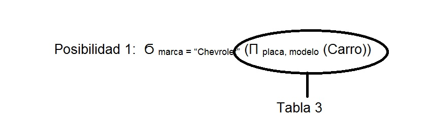

Operación Proyección
- Tipo: Unaria
- Sintaxis:
Π atributo1, atributo2,…….,atributo N (Tabla)
- Descripción: Operación que selecciona valores de atributos específicos de una tabla.
- Ejemplo: Listar la placa y marca de todos los carros.
Π placa, marca (Carro)
La operación anterior da como resultado una tabla3 con dos atributos: placa y marca. Esa es la diferencia con la selección. La proyección selecciona atributos específicos que se necesitan imprimir.
Sugerencia: Siempre que se vaya a escribir una operación del álgebra relacional se debe respetar la sintaxis de la misma.
- Ejemplo: Listar la placa y modelo de los carros que sean de marca Chevrolet.
En esta consulta surge una primera dificultad y es que se está pidiendo imprimir ciertos atributos pero condicionado a algo. Y como se puede ver, la proyección no permite poner condiciones. Por lo tanto, hay que empezar a combinar operaciones.
Para escribir la solución de esta consulta, hay dos posibilidades:
Posibilidad 1: Ϭ marca = “Chevrolet” (Π placa, modelo (Carro))
Posibilidad 2: Π placa, marca (Ϭ marca = “Chevrolet” (Carro))
Se debe recalcar que ambas posibilidades están bien sintácticamente hablando pero hay una que hace lo que se pide y la otra no.
Por qué ambas están bien sintácticamente?
Como en toda operación aritmética, primero se hace lo que hay en paréntesis y luego el resto. Es decir, en la posibilidad 1, primero se hace la proyección dando como resultado una tabla3 y luego se hace la selección sobre ese resultado anterior. Como se puede ver, individualmente, no se está violando la sintaxis de la proyección ni de la selección.

Fuente Propia.
Lo mismo sucede con la posibilidad 2, está bien escrita sintácticamente.
Como se dijo anteriormente, a pesar de que ambas están bien sintácticamente, solo una de las dos funciona para lo que se pide.
Analicemos la posibilidad 1….primero se hace la proyección que es lo que está dentro del paréntesis. Esto genera una tabla con la placa y marca de todos los carros (Tabla 3). Y luego se hace una selección a esta tabla resultante donde en la condición se pregunta por la marca y como se puede observar la marca no es un atributo que forma parte de la Tabla3 generada en la proyección. Luego acá se genera un error. (Es como si se hiciera un SELECT donde en el WHERE se invoca un campo que no existe en la tabla que está en el FROM).
En cambio la posibilidad 2, primero se seleccionan tuplas completas de los carros marca Chevrolet y luego a dichas tuplas se les imprime su placa y su marca. Lo cual es correcto y hace lo que se está pidiendo.
Por lo tanto, la solución a la consulta propuesta es la posibilidad 2.
Este resultado enseña que, teniendo el siguiente SELECT,….
SELECT ca.placa, ca.marca
FROM carro
WHERE ca.marca = “Chevrolet”
….. primero se ejecuta el WHERE y luego se hace lo de la cláusula SELECT.
Es una muestra de que el álgebra relacional permite entender “cómo” se ejecuta una instrucción SELECT.